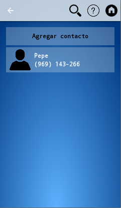

Ayuda Móvilfacil
Aqui encontrará una ayuda para utilizar Movilfacil
Menú de inicio
Desde aquí puedes ir al resto de menus de la aplicación
- Pulsando contactos puedes los telefonos guardados, para más información pulsa con el dedo aqui
- Pulsando mensajes verás los mensajes recibidos y enviados
- Pulsando llamadas verás las llamadas salientes y entrantes de tu teléfono
En esta pantalla están los nombres de las personas y sus telefonos

- Pulsando agregar contacto el nombre de un conocido y un telefono
- Pulsando un contacto apareceran varias opciones:
- Llamar realizará una llamada al numero del contacto
- Mensaje permite escribir un mensaje al numero del contacto
- Editar permite cambiar el nombre o el telefono
- Eliminar permite borrar el contacto
Llamadas
En esta pantalla se ven las llamadas entrantes y salientes del teléfono, Pulsando una llamada apareceran varias opciones:
- Llamar realizará una llamada al numero de la llamada
- Mensaje permite escribir un mensaje al numero de la llamada
Mensajes
En esta pantalla se ven los mensajes entrantes y salientes del teléfono, Pulsando un mensaje apareceran varias opciones:
- Llamar realizará una llamada al numero del mensaje
- Mensaje permite escribir un mensaje al numero dela mensaje